Module 15 Base plots
Learning goals
- Make basic plots in
R - Basic adjustments to plot formatting
Introduction
To learn how to plot, let’s first create a dataset to work with:
country <- c("USA","Tanzania","Japan","Ctr. Africa Rep.","China","Norway","India")
lifespan <- c(79,65,84,53,77,82,69)
gdp <- c(55335,2875,38674,623,13102,84500,6807)These data come from this publicly available database that compares health and economic indices across countries in 2011.
The lifespan column presents the average life expectancy for each country.
The gdp column presents the average GDP per capita within that country, which is a common index for the income and wealth of average citizens.
Let’s see if there is a relationship between life expectancy and income.
Create a basic plot
The simplest way to make a basic plot in R is to use its built-in plot() function:
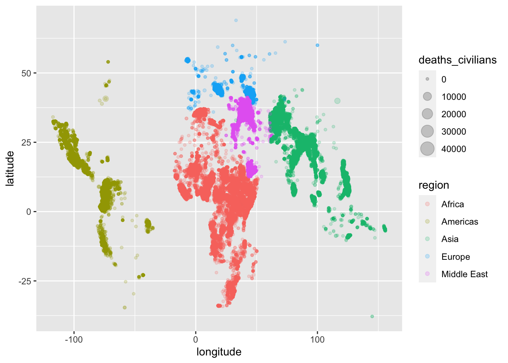
This syntax is saying this: plot column lifespan as a function of gdp. The symbol ~ denotes “as a function of”. This frames lifespan as a dependent variable (y axis) that is affected by the independent variable (x axis), which in this case is gdp.
Note that R uses the variable names you provided as the x- and y-axes. You can adjust these labels however you wish (see formatting section below).
You can also produce this exact same plot using the following syntax:
Choose whichever one is most intuitive to you.
Most common types of plots
The plot above is a scatter plot, and is one of the most common types of plots in data science.
You can turn this into a line plot by adding a parameter to the plot() function:
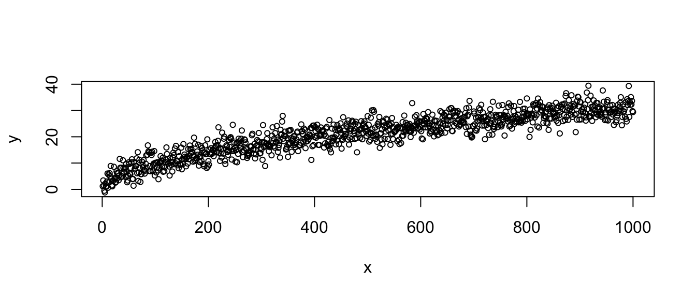
What a mess! Rather than connecting these values in the order you might expect, R connects them in the order that they are listed in their source vectors. This is why line plots tend to be more useful in scenarios such as time series, which are inherently ordered.
Another common plot is the bar plot, which uses a different R function:
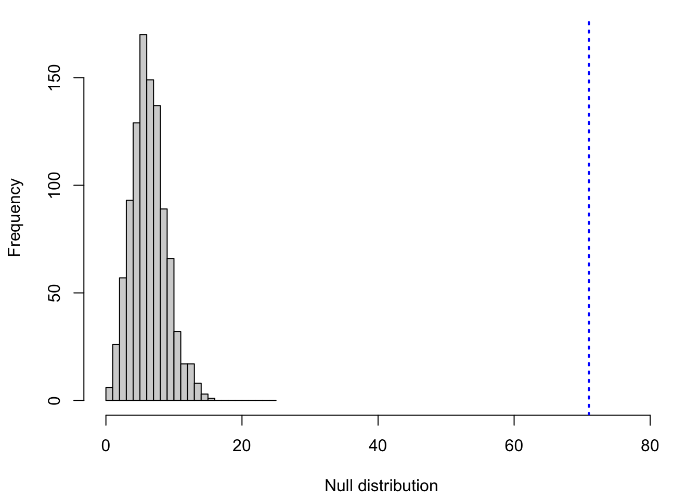
In this command, the parameter height determines the height of the bars, and names.arg provides the labels to place beneath each bar.
There are many more plot types out there, but let’s stop here now.
Exercise 1
Produce a bar plot that shows the GDP for each country.
Basic plot formatting
You can adjust the default formatting of plots by adding other inputs to your plot() command. To understand all the parameters you can adjust, bring up the help page for this function:
If multiple help page options are returned, select the Generiz X-Y Plotting page from the base package. This is the plot function that comes built-in to R.
Here we demonstrate just a few of the most common formatting adjustments you are likely to use:
Set plot range using xlim (for the x axis) and ylim (for the y axis):
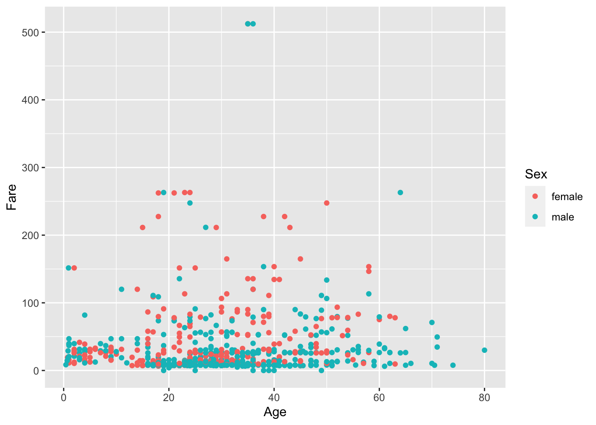
In this command, you are defining axis limits using a 2-element vector (i.e., c(min,max)).
Note that it can be easier to read your code if you put each input on a new line, like this:
Make sure each input line within the function ends with a comma, otherwise you R will get confused and throw an error.
Set dot type using the input pch:
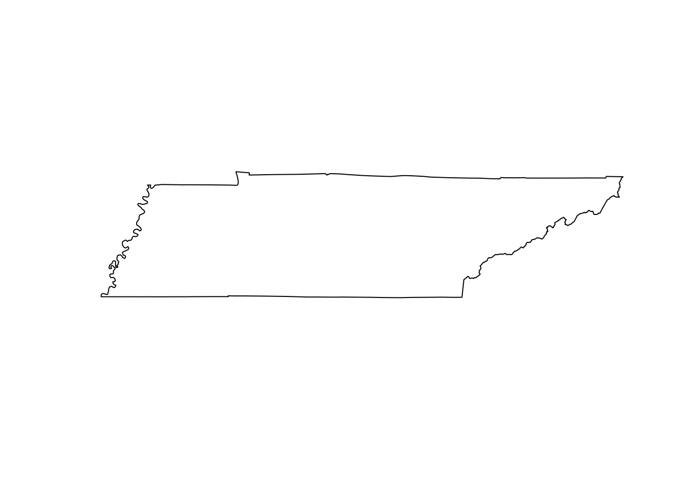
Set dot color using the input col (the default is col="black")
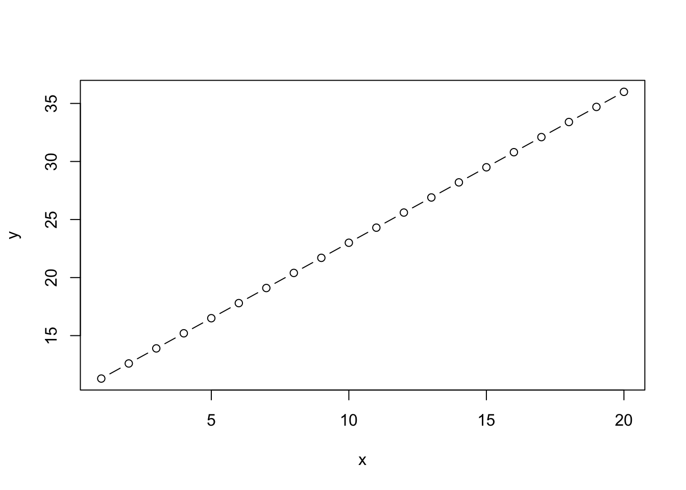
Here is a great resource for color names in R.
Set dot size using the input cex (the default is cex=1):
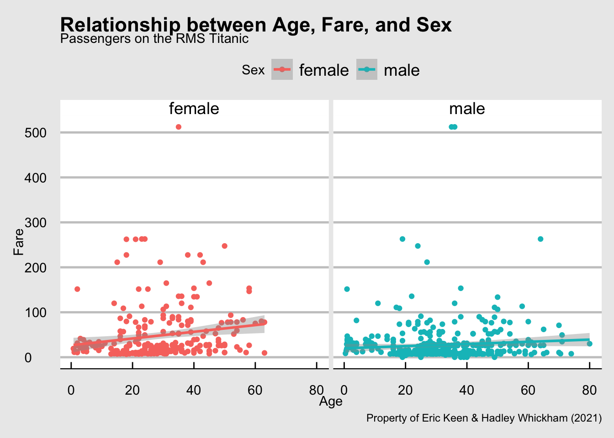
Set axis labels using the inputs xlab and ylab:
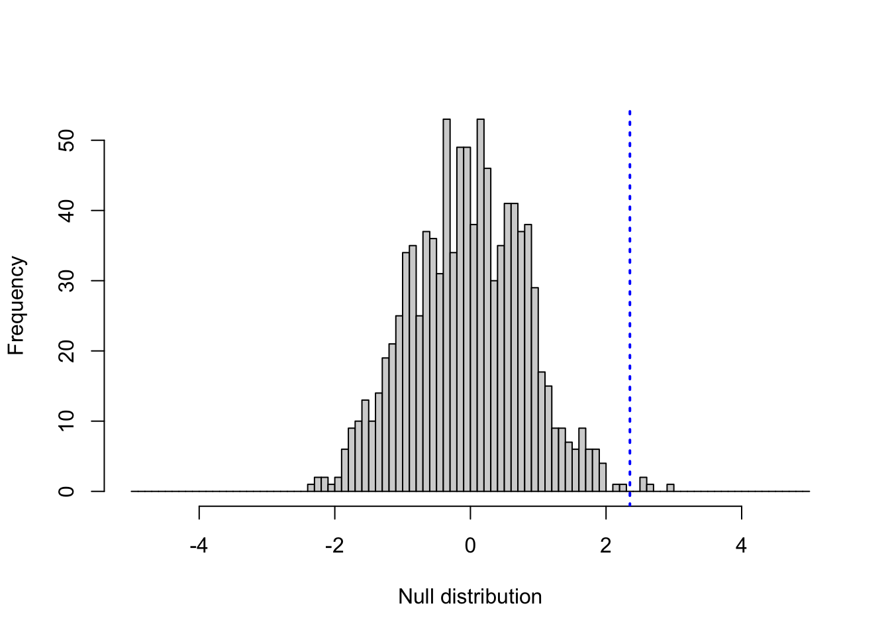
Set axis number size using the input cex.axis (the default is cex.axis=1):
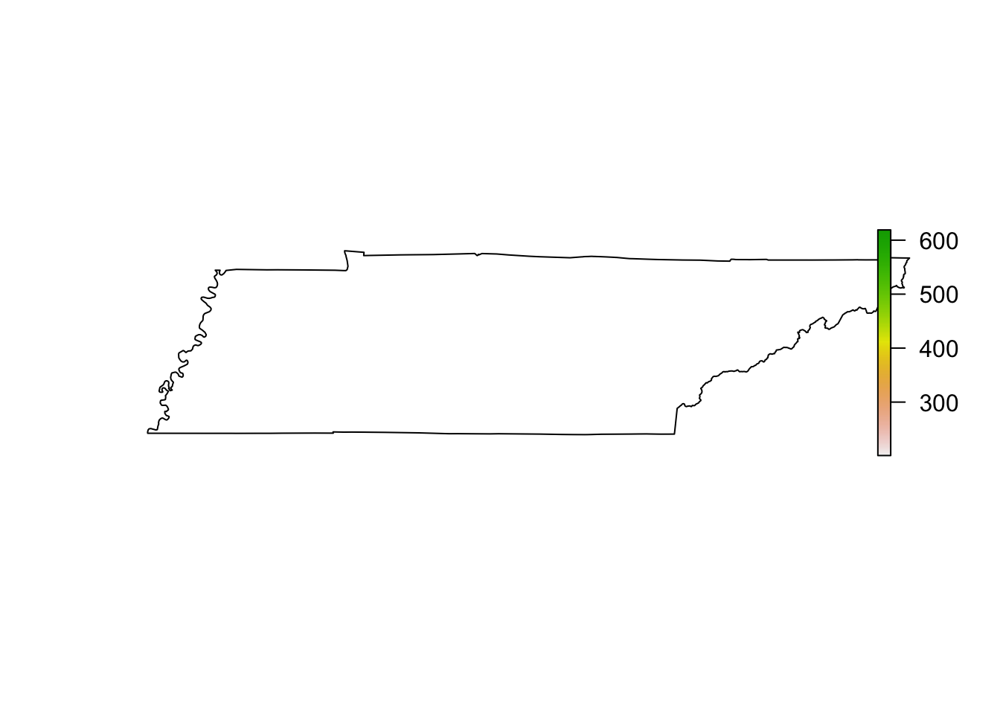
Set axis label size using the input cex.label (the default is cex.lab=1):
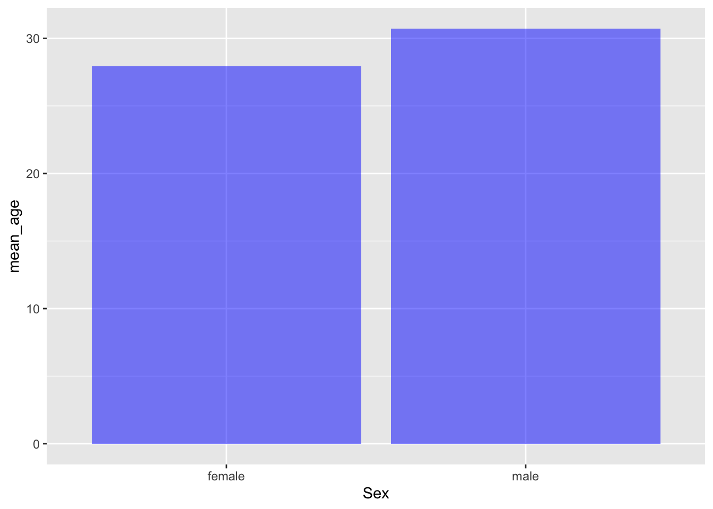
Set plot margins using the function par(mar=c()) before you call plot():
In this command, the four numbers in the vector used to define mar correspond to the margin for the bottom, left, top, and right sides of the plot, respectively.
Create a multi-pane plot using the function par(mfrow=c()) before you call plot():
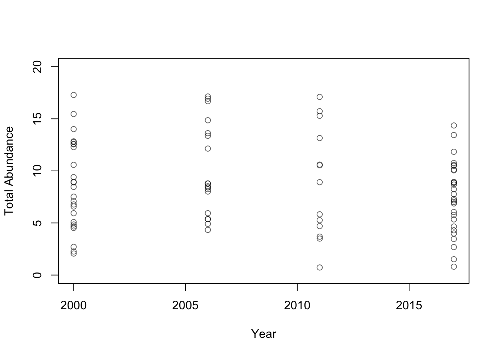
In this command, the two numbers in the vector used to define mfrow correspond to the number of rows and columns, respectively, on the entire plot. In this case, you have 1 row of plots with two columns.
Note that you will need to reset the number of panes when you are done with your multi-pane plot!
Plot dots and lines at once using the input type:
Note the two slightly different formats here.
Use a logarithmic scale for one or of your axes using the input log
Exercise 2
Produce a beautifully formatted plot that incorporates all of these customization inputs explained above into a multi-paned plot.
Plotting with data frames
So far in this tutorial we have been using vectors to produce plots. This is nice for learning, but does not represent the real world very well. You will almost always be producing plots using dataframes.
Let’s turn these vectors into a dataframe:
df <- data.frame(country,lifespan,gdp)
df
## country lifespan gdp
## 1 USA 79 55335
## 2 Tanzania 65 2875
## 3 Japan 84 38674
## 4 Ctr. Africa Rep. 53 623
## 5 China 77 13102
## 6 Norway 82 84500
## 7 India 69 6807To plot data within a dataframe, your plot() syntax changes slightly:
This syntax is saying this: using the dataframe named df as a source, plot column lifespan as a function of column gdp. The symbol ~ denotes “as a function of”. This frames lifespan as a dependent variable (y axis) that is affected by the independent variable (x axis), which in this case is gdp.
Another way to write this command is as follows:
In this command, the $ symbol is saying, “give me the column in df named lifespan”. It is a handy way of referring to a column within a dataframe by name. You will learn more about working with dataframes in an upcoming module.
Exercise 2
A. Use the df dataframe to produce a bar plot that shows life expectancy for each country.
B. Use the df dataframe to produce a jumbled line plot of life expectancy as a function of GDP. Reference the plot() documentation to figure out how to change the thickness of the line.
Next-level plotting
The possibilities for data visualization in R are pretty much limitless, and over time you will become fluent in making gorgeous plots. Here are a few common tools that can take your plots to the next level.
Adding lines
In some cases it is useful to add reference lines to your plot. For example, what if we wanted to be able to quickly see which countries had life expectancies below 75 years?
You can add a line at lifespan = 75 using the function abline().
In this command, the h input means “place a horizontal line at this y value.”.
Similarly, you can use v to specify vertical lines at certain x values.
Note here that another input, lty, was used to change the type of line printed. (Refer to ?abline() for more details).
Exercise 4
Produce a plot of life expectancy as a function of GDP per capita. Then add a line to your plot that indicates which countries have per-capita GDPs that fall below (or above) the average per-capita GDP for the whole dataset. Make your line dashed and color it red.
Adding text
Use the text() function to add labels to your plot:

Exercise 5
Produce a plot of life expectancy as a function of GDP per capita, then label each point by country. Make the labels small and place them to the right of their associated dot (Hint: use ?text for help).
Highlighting certain data points
It can be helpful to highlight a certain data point (or group of data points) using a different dot size, format, or color.
To highlight a single data point, here is one approach you can take: first, plot all points, then re-plot the point of interest using the points() function:
In this example, we re-plotted the data for the fifth row in the dataframe (in this case, China).
To highlight a group of data points, try this approach:
First, create a vector that will contain the color for each data point.
Second, determine the color for each data point using a logical test.
Third, use your vector of colors within your
plot()command.
For example, let’s highlight all countries whose life expectancy is greater than 75.
# First
# create a vector of colors the length of vector `lifespan`
cols <- rep("grey",times=length(lifespan))
cols
## [1] "grey" "grey" "grey" "grey" "grey" "grey" "grey"
# Second
change_these <- which(lifespan > 75)
change_these # these are the elements that we want to highlight
## [1] 1 3 5 6
cols[change_these] <- "red" # change the color for these elements
# Third
plot(lifespan ~ gdp,pch=16,col=cols,log="x")Exercise 6
Produce a plot of life expectancy as a function of GDP per capita, in which all countries with GDPs below $10,000 have larger dots of a different color.
Building a plot from the ground up
In many applications it can be helpful to have complete control over the way your plot is built. To do so, you can build your plot from the very bottom up in multiple steps.
The steps for building up your own plot are as follows:
Stage a blank canvas: A plot begins with a blank canvas that covers a certain range of values for
xandy. To stage a blank canvas, add this parameters to yourplot()function:type="n", axes=FALSE, ann=FALSE, xlim=c(__, __), ylim=c(__, __)". These commands tellRto plot a blank space, not to print axes, not to print annotations like x- or y-axis labels, and to limit your canvas to a certain coordinate range. Be sure to add numbers to thexlim()andylim()commands.Add your axes, if you want, using the function
axis(). The commandaxis(1)prints the x-axis, andaxis(2)prints the y-axis. This function allows you to define where tick marks occur and other details (see?axis).Add axis titles using the function
title().Add reference lines, if you want, using
abline(). Do this before adding data, since it is usually nice for data points to be superimposed on top of your reference lines.Add your data using either
points()orlines().Add text labels, if you want, using
text().
Here is an example of this process:
# 1. Stage a blank canvas
par(mar=c(4.5,4.5,1,1))
plot(1,type="n",axes=FALSE,ann=FALSE,xlim=c(0,100000),ylim=c(40,100))
# 2. Add axes
axis(1,at=c(0,20000,40000,60000,80000,100000),
labels=c("$0", "$20","$40","$60","$80","$100"))
axis(2,at=seq(40,100,by=10),las=2)
# 3. Add axis titles
title(xlab="Gross Domestic Product (GDP, in thousands) per Capita ",cex.lab=.9)
title(ylab="Average Life Expectancy",cex.lab=.9)
# 4. Add reference lines
abline(h=70,v=50000,lty=3,col="grey")
# 5. Add data
points(x=gdp,y=lifespan,pch=16,col="firebrick")
# 6. Add text
text(x=gdp[6],y=lifespan[6],labels="Norway",pos=3)Review assignment
Create a vector of the names of 5 people who are sitting near you. Call it
people.Create a vector of those same 5 people’s shoe sizes (in the same order!). Call it
shoe_size.Create another vector of those same 5 people’s height. Call it
height.Create another vector of those same 5 people’s sex. Call it
sex.Make a scatterplot of height and shoe size. Is there a correlation?
Look up help for
boxplot. Make aboxplot.Make a dataframe named
df. It should contain columns of all the vectors created so far.Make a side by side
boxplotwith shoe sizes of males vs females.Try to find documentation for making a “histogram” (hint: use text autocomplete).
Make a histogram of people’s height.